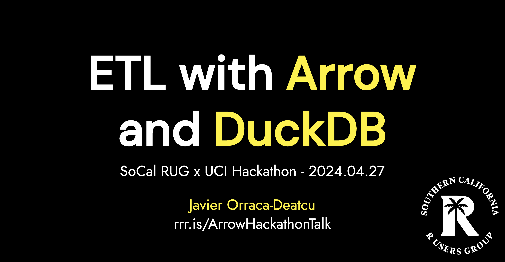

# Install full Arrow package w/ S3 and GCS support:
# Set required env vars
Sys.setenv(LIBARROW_MINIMAL = "false")
Sys.setenv(ARROW_S3 = "ON")
Sys.setenv(ARROW_GCS = "ON")
# Download & Install Arrow
install.packages('arrow', repos = 'https://apache.r-universe.dev')ETL with Arrow & DuckDB
dplyr
arrow
duckdb
duckplyr
Presentation materials from this weekend’s SoCal RUG x UC Irvine hackathon️
Ultra-Fast ETL
Two of my favorite data science tools in recent years include the advent of language agnostic, in-memory analytics frameworks like Apache Arrow & single-node in-process engines like DuckDB. When paired with the Apache Parquet columnar storage format to read, manipulate, analyze, and write data, these tools improve the R and Python experience in multiple ways:
- faster than dplyr (R) and pandas (Python)
- SQL-friendly larger than memory processing
- extremely portable (compile on all major systems)
- zero-copy integration between DuckDB and Arrow
Hackathon Talk
This past weekend, the Southern California R Users Group and UC Irvine hosted their annual hackathon. Given the larger data sets that we made available to the hackathon participants, I provided a talk on ETL with Arrow & DuckDB.
Traditionally, you’d be unable to load a data set larger than your available RAM into your R or Python development environment; Arrow and DuckDB help us get around this limitation. For example, my MacBook Air has 24GB RAM and with R + Arrow, I could read and begin analyzing a 1.1 billion row 40GB Parquet data set in 25 milliseconds!

Presentation Materials
Installation Notes
To compile the full Arrow build with easy access to Amazon S3 and GCS, I’d recommend the following pattern for R and Python users:
# Install full PyArrow w/ S3 and GCS support
# Set required env vars
import os
os.environ["LIBARROW_MINIMAL"] = "FALSE"
os.environ["ARROW_S3"] = "ON"
os.environ["ARROW_GCS"] = "ON"
# Install PyArrow
!pip install pyarrow